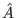

We define the inversion about average operation on our state vector as an operator that takes the amplitude of the i'th state, and increases or decreases it so that it is as much above or below the average as it was below or above the average before the operation. [Grover96]
The matrix representation of the inversion about average operator
 is defined:
Aij = 2/N if
i  j and
Aii = - 1 + 2/N. Note that
A = - I + 2P where I is the identity matrix, and
P is the matrix with each element is equal to 1/N. Observe that
P has the following two properties, first P2 = P, and second
Pv, for any vector v, results in a vector v' with each
element being the arithmetic average of the the elements of
v. [Grover96]
j and
Aii = - 1 + 2/N. Note that
A = - I + 2P where I is the identity matrix, and
P is the matrix with each element is equal to 1/N. Observe that
P has the following two properties, first P2 = P, and second
Pv, for any vector v, results in a vector v' with each
element being the arithmetic average of the the elements of
v. [Grover96]
Now we can examine the operation of A on an arbitrary vector v. Av = (- I + 2P)v = - v + 2Pv, By the second property of P above, note that Pv is a vector with each element equal to a where a is the arithmetic average of the elements of v. Therefore the i'th component of the vector is (- vi + 2a) which can be rewritten a + (a - vi). Thus the i'th element is exactly as much above/below average as it was below/above average before the operation. [Grover96]